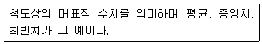
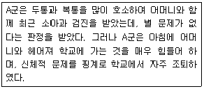
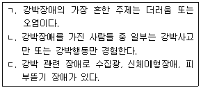
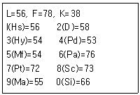
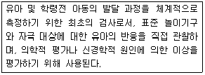
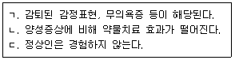
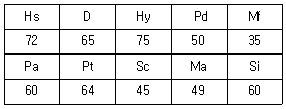
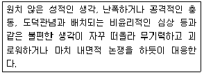
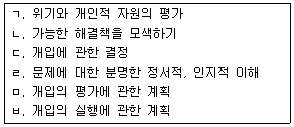
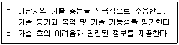

임상심리사-2급 (2018-03-04 기출문제)
1과목: 심리학개론
1. 심리측정에 관한 설명으로 옳은 것은?
- 일반적으로 검사도구가 측정하고자 목적한 바를 측정할 때 그 검사도구는 신뢰도가 있다고 한다. "
- 내적 일관성 신뢰도는 검사를 1회 사용한 결과만을 가지고 신뢰도를 계산해야 할 때 사용될 수 있는 방식이다.
- 검사-재검사 신뢰도는 서로 다른 집단의 사람들에게 검사를 반복적으로 사용했을 때 동일한 결과가 나오는 정도이다.
- 내용타당도는 어떤 검사가 그 검사를 실시한 결과를 통해서 알고자 하는 준거변수와의 상관 정도를 말한다.
(정답률: 50%)

2. 집단 전체의 의사결정이 개인적 의사결정의 평균보다 더 극단적으로 되는 현상은?
- 사회적 촉진
- 사회적 태만
- 집단 극화
- 집단 사고
(정답률: 69%)
3. 이성적이고 직접적인 방법으로 불안을 통제할 수 없을 때, 붕괴의 위기에 처한 자아를 보호하기 위해 무의식적으로 사용하는 사고 및 행동 수단은?
- 통제 위치
- 효능감
- 사회적 강화
- 방어기제
(정답률: 90%)
4. 학습에 대한 설명으로 틀린 것은?
- Tolman은 동물들도 다양한 단편적인 지식 또는 인지를 획득한다고 주장한다.
- 쥐가 부적자극이 올 것이라는 신호를 알고서 미리 피하는 것을 도피학습이라고 한다.
- 행동주의 심리학자들은 대부분 동물들의 학습에는 행동이라는 반응수행이 필수적이라고 주장한다.
- 고전적 조건형성에서 학습되는 것은 조건자극(CS)과 무조건자극(UCS)의 연합이며, Pavlov는 시간적 근접성을 연합의 필요조건이라고 주장했다.
(정답률: 66%)
5. 자신의 성공은 자기가 잘한 것 때문이라고 하고, 자신의 실패에 대해서는 자신의 책임을 모면하려고 하는 사람이 있다면, 이 사람이 보이는 성향은?
- 암묵적 자기중심주의 (implicit egotism)
- 자기애 (narcissism)
- 자기봉사적 편향(self-serving bias)
- 성명-글자 효과(name-letter effect)
(정답률: 62%)
6. '역지사지'라는 말은 특정사건이나 현상을 타인의 입장에서 사고하는 것을 의미한다. 역지사지를 할 수 있는 능력을 Piaget의 인지발달 단계와 관련시켰을 때 가장 적합한 설명은?
- 역지사지 능력은 대상영속성 개념을 형성하는 단계가 되어야 가능하다.
- 수에 대한 보존개념을 획득하기 전 단계에서 역지사지 능력이 가능하게 된다.
- 눈으로 보고 만질 수 있는 사물들 간의 관계와 규칙성을 이해하고 조작이 가능한 단계에서 역지사지 능력을 갖출 수 있다.
- 역지사지 능력은 추상적인 연역적 사고능력이 가능한 단계에서만 갖출 수 있다.
(정답률: 59%)
7. 'IB-MKB-SMB-C5.l-68.l-5'배열을 외우기는 힘들지만, 이를 'IBM-KBS-MBC-5.16-8.15'배열로 재구성하면 외우기가 쉬워진다. 이와 같이 정보를 재부호화하여 하나로 묶는 것은?
- 암송
- 부호화
- 청킹(chunking)
- 활동기억
(정답률: 84%)
8. 과자의 양이 적다는 어린 꼬마에게 모양을 다르게 했더니 많다고 좋아한다. 이 아이의 논리적 사고를 Piaget 이론으로 본다면 무엇에 해당하는가?
- 자기중심성의 문제
- 대상영속성의 문제
- 보존개념의 문제
- 가설-연역적 추론의 문제
(정답률: 82%)
9. 비확률적 표집방법에 해당하지 않는 것은?
- 목적 표집
- 편의 표집
- 할당 표집
- 단순 표집
(정답률: 53%)
10. 불안이 수행에 미치는 영향을 알아보는 실험에서 종속변인은?
- 피험자의 수행
- 불안의 원인
- 불안의 수준
- 피험자의 연령
(정답률: 77%)
11. 대뇌의 우반구가 손상되었을 때 주로 영향을 받게 될 능력은?
- 통장잔고 점검
- 말하기
- 얼굴 인식
- 논리적 문제해결
(정답률: 68%)
12. 주변에 교통사고를 당한 사람들이 많은 사람은 교통사고 발생률을 실제보다 높게 판단하는 것처럼 특정 사건을 지지하는 사례들이 기억에 저장되어 있는 정도에 따라 사건의 발생가능성을 판단하는 경향은?
- 초두 효과
- 점화 효과
- 가용성 발견법
- 대표성 발견법
(정답률: 67%)
13. Cattell의 성격이론에 관한 설명과 가장 거리가 먼 것은?
- 주로 요인분석을 사용하여 성격요인을 규명하였다.
- 지능을 성격의 한 요인인 능력특질로 보았다.
- 개인의 특정 행동을 설명할 수 있느냐에 따라 특질을 표면특질과 근원특질로 구분하였다.
- 성격특질이 서열적으로 조직화되어 있다고 보았다.
(정답률: 66%)
14. 커피숍이나 음식점에서 쿠폰에 도장을 찍어 주고 일정 조건이 충족되면 보상하는 것은 조건형성의 어떤 강화계획과 관련 있는가?
- 고정간격 강화계획
- 고정비율 강화계획
- 변동간격 강화계획
- 변동비율 강화계획
(정답률: 70%)
15. 성격 특성들 간의 관련성에 관한 개인적 신념으로서 타인의 성격을 판단하는 틀로 이용하는 것은?
- 기본적 귀인오류(fundamental attribution error)
- 고정관념(stereotype)
- 내현성격이론(implicit personality theory)
- 자기봉사적 편향(self-serving bias)
(정답률: 59%)
16. Horney가 아동의 성격 중 부모에 대한 적개심을 억압하는 이유로 제시한 네 가지는?
- 사랑, 안전, 두려움, 무기력
- 두려움, 안전, 사랑, 죄의식
- 무기력, 사랑, 죄의식, 회피
- 사랑, 두려움, 죄의식, 무기력
(정답률: 53%)
17. 종속변인에 나타난 변화가 독립변인의 영향 때문이라고 추론할 수 있는 정도를 의미하는 것은?
- 내적 신뢰도
- 외적 신뢰도
- 내적 타당도
- 외적 타당도
(정답률: 66%)
18. A씨가 할머니 댁에 방문하였을 때, 음료수를 바닥에 엎질러서 할머니에게 혼났던 것을 기억하고 있다. 이러한 기억을 지칭하는 것은?
- 의미 기억
- 암묵 기억
- 절차 기억
- 일화 기억
(정답률: 85%)
19. 다음은 무엇에 관한 설명인가?

- 빈도분포값
- 추리통계값
- 집중경향값
- 변산측정값
(정답률: 70%)
20. 성격이란 삶과 죽음이 교차하는 현실 속에서 그 사람이 내리는 선택과 결정에 의해 좌우되는 것이라고 보는 관점은?
- 정신분석적 관점
- 인본주의적 관점
- 실존주의적 관점
- 현상학적 관점
(정답률: 73%)
2과목: 이상심리학
21. 발달 정신병리에서 성별, 기질, 부모의 불화, 부모의 죽음이나 이별, 긍정적 학교 경험의부족 등은 어떤 요인에 해당하는가?
- 보호 요인
- 통제 요인
- 탄력성
- 위험 요인
(정답률: 75%)
22. 허위성 장애에 관한 설명으로 적절하지 않은 것은?(오류 신고가 접수된 문제입니다. 반드시 정답과 해설을 확인하시기 바랍니다.)
- 남성보다 여성에게 더 흔하다.
- 정확한 원인은 잘 알려져 있지 않다.
- 외부적 보상이 없음에도 불구하고 증상을 허위로 만들어낸다.
- 청소년기에 주로 발병된다.
(정답률: 49%)
23. 사고의 비약(flight of ideas) 증상에 관한 설명으로 옳은 것은?
- 조현병의 망상적 사고
- 우울증의 자살충동적 사고
- 조증의 대화할 때 보이는 급격한 주제의 전환
- 신경인지장애의 지리멸렬한 사고
(정답률: 67%)
24. 다음은 어떤 장애인가?

- 선택적 함구증
- 반응성 애착장애
- 분리불안 장애
- 기분조절불능장애
(정답률: 84%)
25. 인지치료 접근에서 사용하는 개입 방안이 아닌 것은?
- 협력적 경험주의
- 소크라테스식 대화법
- ABC 사고기록지
- 정서적 추론
(정답률: 55%)
26. 성격장애의 하위 범주 중 극적이고 변덕스러운 행동을 특징적으로 나타내는 장애군에 속하는 것은?
- 회피성 성격장애
- 강박성 성격장애
- 의존성 성격장애
- 경계성 성격장애
(정답률: 82%)
27. 도박장애가 있는 사람들의 특징이 아닌 것은?
- 뇌 보상중추에서 도파민 활동성과 작용이 고조된다.
- 물질사용장애와는 다르게 금단증상과 내성이 없다.
- 충동적이며 새로운 자극을 추구하는 특성을 가진다.
- 스트레스를 받거나 괴로울 때 도박을 더 많이 한다.
(정답률: 81%)
28. DSM-5에서 해리성 정체성 장애의 진단적 특징이 아닌 것은?
- 자기감각과 행위 주체감의 갑작스러운 변화
- 반복적인 해리성 기억상실
- 경험성 기억의 퇴보
- 알코올 등의 직접적인 생리적 효과로 일어나는 경우도 포함
(정답률: 77%)
29. 공황장애에 관한 설명으로 적절한 것은?
- 공황발작은 공황장애의 고유한 증상이다.
- 여성보다 남성에게서 2~3배 더 많은 것으로 알려져 있다.
- 청소년 후기와 30대 중반에서 가장 많이 발병한다.
- 대개 나이가 들면서 자연스럽게 치유된다.
(정답률: 41%)
30. 강박 및 관련장애에 관한 설명으로 옳은 것을 모두 고른 것은?

- ㄱ, ㄴ
- ㄱ, ㄷ
- ㄴ, ㄷ
- ㄱ, ㄴ, ㄷ
(정답률: 73%)
31. 외상후스트레스 장애의 대표적인 지역사회 개입접근인 심리경험 사후보고에 관한 설명으로 적절한 것은?
- EMDR보다 효과적이다.
- 특정 고위험군 환자들에게 효과적이다.
- 청소년에게만 효과적이다.
- 전문가에 의해 행해졌을 때만 효과적이라고 보고된다.
(정답률: 65%)
32. 성격장애에 관한 설명으로 옳지 않은 것은?
- 다른 정신장애와 동반되어 나타날 수 있다.
- 현실검증력의 장애가 있다.
- 고정된 행동양식이 개인 생활과 사회생활 전반에 넓게 퍼져 있다.
- 대개 청소년기나 성인기 초기에 나타난다.
(정답률: 64%)
33. DSM-5에 새로 생긴 장애는?
- 의사소통장애
- 아스퍼거 증후군
- 아동기 발병 유창성장애
- 사회적 의사소통장애
(정답률: 66%)
34. 지속성 우울장애(dysthymia)에 관한 설명으로 옳지 않은 것은?
- 청소년의 경우, 증상이 적어도 2년 동안 지속되어야 한다.
- 하루의 대부분 우울 기분이 있다.
- 조증 삽화, 경조증 삽화가 없어야 한다.
- 식욕 부진 또는 과식, 불면 또는 과다수면, 절망감, 자존감 저하 등 2개 이상의 증상을 보인다.
(정답률: 69%)
35. 성적 가학장애에 관한 설명으로 적절하지 않은 것은?
- 주로 성적 피학장애를 가진 상대에게 가학적 행동을 보인다.
- 대부분 시간이 지나도 행동의 심각도에는 큰 변화가 없다.
- 대부분 초기 성인기에 나타난다.
- 성가학적 행동의 패턴은 보통 장기적으로 나타난다.
(정답률: 69%)
36. 다음 중 증상이 나타나는 기간이 1개월 이상 6개월 이내인 경우 내리는 진단은?
- 망상장애
- 조현정동장애
- 조현양상장애
- 단기 정신병적 장애
(정답률: 45%)
37. 신경성 폭식증에 관한 설명으로 옳지 않은 것은?
- 보상행동(purging)은 칼로리를 낮추는데 효과적이지 않다.
- 시간이 지남에 따라 폭식과 보상행동(purging)이 점점 증가한다.
- 폭식은 시간과 장소, 타인의 유무와 관계없이 발생한다.
- 청소년기나 성인 초기에 시작된다.
(정답률: 69%)
38. 물질사용장애에 관한 설명이 아닌 것은?
- 내성이 나타난다.
- 금단증상이 나타난다.
- 물질사용을 중단하거나 조절하려고 해도 뜻대로 되지 않는다.
- 물질사용으로 인한 직업기능의 손상여부는 진단 시 고려하지 않는다.
(정답률: 81%)
39. 범불안장애에서 나타나는 불안의 특징은?
- 특정 대상에 대한 과도한 불안
- 발작경험에 대한 예기불안(anticipatory anxiety)
- 불안의 대상이 분명하지 않은 부동불안(free-floating anxiety)
- 반복적으로 침투하는 특정 사건에 대한 염려
(정답률: 77%)
40. 주요 신경인지장애와 경도 신경인지장애의 감별진단 기준으로 적절하지 않은 것은?
- 기억과 학습 감퇴 정도
- 성격의 변화 정도
- 언어능력의 감퇴 정도
- 독립적 생활의 장애 정도
(정답률: 57%)
3과목: 심리검사
41. K-WAIS-IV에서 처리속도가 점수에 긴밀하게 영향을 주는 소검사는?
- 숫자
- 퍼즐
- 지우기
- 무게비교
(정답률: 57%)
42. 심리평가를 위해 수행되는 면담에 관한 설명으로 옳은 것은?
- 면담은 구조화할 수 없다는 단점이 있다.
- 면담은 평가를 하기 위한 목적으로 하는 것이라 치료적인 효과는 없다.
- 면담에서는 신뢰도와 타당도를 크게 고려하지 않아도 된다는 장점이 있다.
- 면담자가 피면담자에 대한 전반적인 인상을 형성한 후 그것에 준해 다른 관련특성을 추론하는 경향을 할로(halo) 효과라고 한다.
(정답률: 71%)
43. MMPI-2 임상척도와 Kunce와 Anderson(1984)이 제안한 기본 차원 간의 연결이 옳지 않은 것은?
- 1번 척도 - 표현
- 4번 척도 - 주장성
- 8번 척도 - 상상력
- 9번 척도 - 열의
(정답률: 65%)
44. 대상 및 사건에 대한 학습을 의미하는 서술기억(declarative memory)의 하위 영역에 포함되는 것은?
- 절차기억(procedural memory)
- 암묵적 기억(implicit memory)
- 일화기억(episodic memory)
- 특정기억(particular memory)
(정답률: 65%)
45. 지적장애 진단을 위한 IQ 기준과 이 장애에 해당되는 사람의 비율은?
- IQ 60 미만, 전체인구의 약 3% 이하
- IQ 65 미만, 전체인구의 약 3% 이하
- IQ 70 미만, 전체인구의 약 3% 이하
- IQ 70 미만, 전체인구의 약 5% 이하
(정답률: 62%)
46. 다음 MMPI-2 프로파일과 가장 관련이 있는 진단은?

- 우울증
- 품행장애
- 전환장애
- 조현병
(정답률: 70%)
47. 개인용 지능검사와 집단용 지능검사에 관한 설명으로 옳은 것은?
- 집단용 지능검사의 경우, 검사의 시행과 절차가 간편하기 때문에 검사자는 피검사자의 검사행동에 관한 자료수집이 용이하다.
- 개인용 지능검사나 집단용 지능검사에서 검사실시와 절차에 대한 검사자의 본질적인 역할은 동일하다.
- 피검사자는 개인용 지능검사의 경우에는 사람에게 반응하지만, 집단용 지능검사의 경우에는 주어진 문항에 반응한다고 볼 수 있다.
- 개인용 지능검사나 집단용 지능검사나 피검사자가 반응하는 데 요구되는 인지작용은 질적인 측면에서 차이가 없다.
(정답률: 52%)
48. 주제통각검사(Thematic Apperception Test : TAT)의 실시에 관한 설명으로 옳은 것은?
- 모든 수검자에게 24장의 카드를 실시한다.
- 카드를 보여주고, 각 그림을 보면서 될 수 있는 대로 연극적인 장면을 만들어 보라고 지시 한다.
- 수검자의 반응이 매우 피상적 이고 기술적인 경우라도 검사자는 개입하지 않고 다음 반응으로 넘어간다.
- 수검자가 “이 사람은 남자인가요? 여자인가요?” 라고 묻는 경우, 검사 요강을 참고하여 성별을 알려준다.
(정답률: 61%)
49. 신경심리검사에 관한 설명으로 옳지 않은 것은?
- 치료 효과의 평가에 사용할 수 있다.
- 우울장애와 치매상태를 감별해 줄 수 있다.
- 가벼운 초기 뇌손상의 진단에는 효과적이지 못하다.
- 신경심리검사의 해석에 성격검사 결과를 참조한다.
(정답률: 68%)
50. 성격검사의 구성타당도를 평가하는 방법이 아닌 것은?
- 성격검사의 요인구조를 분석한다.
- 다른 유사한 성격을 측정하는 검사와의 상관을 구한다.
- 관련 없는 성격을 측정하는 검사와의 상관을 구한다.
- 전문가들로 하여금 검사 내용을 판단하게 한다.
(정답률: 53%)
51. K-WAIS-IV 소검사 중 같은 유형의 소검사에 해당하지 않는 것은?
- 상식, 공통성
- 퍼즐, 무게비교
- 지우기, 기호쓰기
- 동형찾기, 무게비교
(정답률: 58%)
52. MMPI-2에서 F척도 상승이 기대되지 않는 경우는?
- 고의적으로 나쁘게 보이려는 태도로 응답했을 경우
- 자신의 약점을 고의적으로 숨기려는 강한 방어적 태도로 응답했을 경우
- 대부분의 문항에 대해 '그렇다' 혹은 '아니다'의 한 방향으로만 응답했을 경우
- 혼란, 망상적 사고 또는 다른 정신병적 과정을 겪고 있는 사람이 응답했을 경우
(정답률: 50%)
53. 시공간 처리능력을 평가하기에 적합하지 않은 검사는?
- 토막짜기
- 벤더 도형 검사
- 선로 잇기 검사
- 레이 복합 도형 검사
(정답률: 63%)
54. 연령이 69세인 노인환자의 신경심리학적 평가에 적합하지 않은 검사는?
- SNSB
- K-VMI-6
- Rorschach
- K-WAIS-IV
(정답률: 55%)
55. K-WISC-IV에서 일련의 숫자와 글자를 읽어주고 숫자는 많아지는 순서로, 글자는 가나다 순서로 각각 말하게 하는 과제는?
- 숫자
- 선택
- 행렬추리
- 순차연결
(정답률: 55%)
56. 다음에서 설명하는 검사는?

- Gesell 의 발달 검사
- Bayley의 영아발달 척도
- 시지각 발달 검사
- 사회성숙도 검사
(정답률: 51%)
57. 신뢰도의 추정방법 중 반분신뢰도의 장점은?
- 검사의 문항수가 적어도 된다.
- 반분된 검사가 동형일 필요가 없다.
- 단 1회의 시행으로 신뢰도를 구할 수 있다.
- 속도검사의 신뢰도를 추정하는데 적합하다.
(정답률: 67%)
58. 신경심리평가 중 주의력 및 정신적 추적능력을 평가할 수 있는 검사가 아닌 것은?
- Wechsler 지능검사의 기호쓰기 소검사
- Wechsler 지능검사의 숫자 소검사
- Trail Making Test
- Wisconsin Card Sorting Test
(정답률: 60%)
59. 성취도검사의 일종인 기초학습기능검사가 평가하기 어려운 영역은?
- 독해력
- 계산능력
- 철자법 능력
- 공간추론 능력
(정답률: 66%)
60. 심리검사의 윤리적 문제에 대한 설명으로 옳지 않은 것은?
- 검사자들은 검사제작의 기술적 측면에만 관심을 가질 필요가 있다.
- 제대로 자격을 갖춘 검사자만이 검사를 사용해야 한다는 조건은 부당한 검사사용으로부터 피검자를 보호하기 위한 조치이다.
- 검사자는 규준, 신뢰도, 타당도 등에 관한 기술적 가치를 평가할 수 있어야 한다.
- 심리학자에게 면허와 자격에 관한 법을 시행하는 것은 직업적 윤리 기준을 세우기 위함이다.
(정답률: 78%)
4과목: 임상심리학
61. 집단개업 활동을 할 때 임상심리 전문가들이 가장 주의해야 할 사항은?
- 직업윤리 및 활동에 대해 개인적인 책임을 져야한다.
- 직업적인 경쟁과 성격적인 충돌 가능성이 있다.
- 개인의 독립적인 사무실의 확보 비용이 든다.
- 개인적이고 직업적인 고립감을 경험한다.
(정답률: 52%)
62. 두뇌기능의 국재화에 관한 설명으로 옳은 것은?
- 특정 인지능력은 국부적인 뇌 손상에 수반되는 한정된 범위의 인지적 결함으로부터 발생한다고 본다.
- Broca 영역은 좌반구 측두엽 손상으로 수용적 언어 결함과 관련된다.
- Wernicke 영역은 좌반구 전두엽 손상으로 표현 언어 결함과 관련된다.
- MRI 및 CT가 개발되었으나 기능 문제 확인에는 외과적 검사가 이용된다.
(정답률: 55%)
63. 정신분석치료의 주요 개념 및 기법과 가장 거리가 먼 것은?
- 전이
- 저항
- 과제
- 훈습
(정답률: 73%)
64. 근육 긴장을 이완시키고, 심장의 박동을 조정하고, 혈압을 통제하는 훈련을 받는 것은?
- 바이오 피드백
- 행동적인 대처방식
- 문제 중심의 대처기술
- 정서 중심의 대처기술
(정답률: 72%)
65. 아동 또는 청소년의 폭력비행을 상담할 때 부모를 통한 개입법으로 가장 효과적인 것은?
- 자녀가 반사회적 행동을 하면 심하게 야단을 치게 한다.
- 사회에서 용인되는 행동을 보이면 일관되게 보상을 주도록 한다.
- 가족모임을 열어서 훈계를 하도록 한다.
- 폭력을 휘둘렀을 때마다 부모가 자녀를 매로 다스리게 한다.
(정답률: 80%)
66. 합리적 정서치료에 대한 설명으로 틀린 것은?
- Aaron Beck이 개발했다.
- 환자가 사물에 대해 생각하는 방식을 바꿈으로써 행동 변화를 목적으로 한다.
- 해석은 문제가 되는 감정적, 행동적 결과(C)를 결정하는 사건과 상황(A)에 대한 믿음(B)이다.
- 이 치료의 기본목적은 사람들이 자신이 가진 비논리적 사고에 직면하게 만드는 것이다.
(정답률: 62%)
67. 현대 임상심리학 발전에 가장 큰 영향을 준 역사적 사건은?
- Binet의 지능검사 개발
- MMPI 의 개발
- 미국심리학회 설립
- 제 1·2차 세계대전
(정답률: 75%)
68. Burish(1984)는 객관적 성격검사 제작에 관한 접근들을 규명하여 기술하였다. 다음 중 이 접근법에 해당하지 않는 것은?
- 외적 준거 접근
- 내적 구조 접근
- 내적 내용 접근
- 외적 차원 접근
(정답률: 52%)
69. 다음 중 비밀유지의 의무가 제외될 수 있는 경우에 해당하지 않는 것은?
- 자살 가능성이 있는 내담자
- 범죄를 저지를 가능성이 있는 내담자
- 강도, 강간 등 범죄 피해자
- 아동학대의 사례
(정답률: 66%)
70. 체중 조절을 위하여 식이요법을 시행하는 사람이 매일 식사의 시간, 종류, 양과 운동량을 구체적으로 기록하고 있다면 이는 어떤 행동 관찰의 방법인가?
- 자기-감찰(self-monitoring)
- 통계적인 평가
- 참여 관찰(participant observation)
- 비참여 관찰(non-participant observation)
(정답률: 83%)
71. 심리사회적 또는 환경적 스트레스와 생물학적 또는 기타 취약성의 상호작용이 질병을 일으킨다는 조망은?
- 상호적 유전-환경 조망
- 병적 소질-스트레스 조망
- 사회적 조망
- 생물학적 조망
(정답률: 61%)
72. 실존적 접근의 심리치료는?
- 인지치료
- 의미치료
- 자기교습훈련
- 합리적 정서행동치료
(정답률: 64%)
73. 투쟁-도피(fight-flight) 반응과 가장 거리가 먼 것은?
- 호흡의 증가
- 땀 분비 감소
- 소화기능 저하
- 동공 팽창
(정답률: 71%)
74. '엄마'라는 언어가 어머니의 행동과 반복적으로 연합됨으로써 획득된다고 설명하는 이론은?
- 고전적 조건형성
- 조작적 조건형성
- 관찰학습
- 언어심리학적 이론
(정답률: 62%)
75. Wolpe의 체계적 둔감법 절차의 설명과 가장 거리가 먼 것은?
- 공포증의 치료에 효과적인 것으로 밝혀졌다.
- 불안을 억제하기 위하여 이완 상태를 유도한다.
- 이완을 위해서 자극에 대한 실제 노출을 상상노출보다 먼저 제시한다.
- 불안을 가장 약하게 일으키는 상황부터 노출시킨다.
(정답률: 79%)
76. 조현병의 음성증상에 관한 설명으로 옳은 것을 모두 고른 것은?

- ㄱ, ㄴ
- ㄱ, ㄷ
- ㄴ, ㄷ
- ㄱ, ㄴ, ㄷ
(정답률: 57%)
77. 다음 30대 여성의 다면적 인성검사 MMPI-2 결과에 대한 해석으로 적절한 것은?

- 스트레스 상황에서 신체증상이 과도하고 회피적 대처를 할 소지가 크다.
- 망상, 환각 등의 정신증적 증상이 나타나기 쉽다.
- 반사회적 행동을 보일 가능성이 크다.
- 외향적이고 과도하게 에너지가 항진되어 있기 쉽다.
(정답률: 76%)
78. 행동 평가와 전통적 심리평가 간의 차이점으로 틀린 것은?
- 행동 평가에서 성격의 구성 개념은 주로 특정한 행동 패턴을 요약하기 위해 사용된다.
- 행동 평가는 추론의 수준이 높다.
- 전통적 심리평가는 예후를 알고, 예측하기 위한 것이다.
- 전통적 심리평가는 개인 간이나 보편적 법칙을 강조한다.
(정답률: 50%)
79. 다음에 해당하는 장폐 유형은?

- 공황장애
- 강박장애
- 성적불쾌감
- 우울증
(정답률: 62%)
80. 임상심리학자의 고유한 역할과 가장 거리가 먼 것은?
- 사례관리
- 심리평가
- 심리치료
- 심리학적 자문
(정답률: 72%)
5과목: 심리상담
81. 위기상담과정에 사용되는 단계를 순서대로 바르게 나열한 것은?

- ㄱ → ㄴ → ㄹ → ㄷ → ㅁ → ㅂ
- ㄱ → ㄹ → ㄴ → ㄷ → ㅂ → ㅁ
- ㄱ → ㄴ → ㄹ → ㄷ → ㅂ → ㅁ
- ㄱ → ㄹ → ㄴ → ㄷ → ㅁ → ㅂ
(정답률: 65%)
82. 실존주의 상담 접근에서 제시한 인간의 기본조건에 해당하지 않는 것은?
- 인간은 누구나 자기인식 능력을 가지고 있다.
- 자신의 정체감 확립과 타인과 의미 있는 관계를 수립한다.
- 인간은 완성을 추구하는 경향이 있다.
- 죽음이나 비존재에 대해 인식한다.
(정답률: 59%)
83. 다음 중 게슈탈트 심리치료에서 강조하는 것이 아닌 것은?
- 지금-여기
- 내담자의 억압된 감정에 대한 해석
- 미해결 과제 또는 회피
- 환경과의 접촉
(정답률: 65%)
84. 합리적-정서적 치료 상담의 ABCDE과정 중 D가 의미하는 것은?
- 논박
- 결과
- 왜곡된 신념
- 효과
(정답률: 67%)
85. 알코올중독자 상담에 관한 설명으로 옳지 않은 것은?
- 가족을 포함하여 타인의 방해를 받지 않기 위하여 비밀리에 상담한다.
- 치료 초기 단계에서 술과 관련된 치료적 계약을 분명히 한다.
- 문제 행동에 대한 행동치료를 병행할 수 있다、
- 치료후기에는 재발가능성을 언급한다.
(정답률: 73%)
86. Krumboltz가 제시한 상담의 목표에 해당하지 않는 것은?
- 내담자가 요구하는 목표이어야 한다.
- 상담자의 도움을 통해 내담자가 달성할 수 있는 목표이어야 한다.
- 내담자가 상담목표 성취의 정도를 평가할 수 있어야 한다.
- 모든 내담자에게 동일하게 적용될 수 있는 목표이어야 한다.
(정답률: 78%)
87. 가족진단시 사용되는 질문지식 사정도구 중 응집력과 적응력의 두 차원을 주로 사용하는 모델은?
- 비버즈(beavers) 모델
- 써컴플렉스(circumplex) 모델
- 맥매스터 (mcmaster) 모델
- 의사ㆍ소통(communication) 모델
(정답률: 44%)
88. Yalom이 제시한 상호역동적인 치료집단올 위해 적절한 구성원 수는?
- 4~5명
- 7~8명
- 10~11명
- 12~13명
(정답률: 69%)
89. 가출 충동에 직면하고 있는 청소년을 상담할 때 상담자가 취해야 할 행동으로 옳은 것을 모두 고른 것은?

- ㄱ, ㄴ
- ㄱ, ㄷ
- ㄴ, ㄷ
- ㄱ, ㄴ, ㄷ
(정답률: 61%)
90. 최초로 심리학 지식을 상담이나 치료의 목적으로 활용하려고 심리클리닉을 펜실베니아 대학교에 처음 설립한 사람은?
- 위트머(Witmer)
- 볼프(Wolpe)
- 스키너(Skinner)
- 로저스(Rogers)
(정답률: 63%)
91. 아이가 떼를 쓰고 나서 부모에게 혼나면 혼날수록, 그 아이는 떼를 점점 더 심하게 썼다. 이때 부모가 혼내는 것이 아이가 떼를 쓰는데 어떤 역할을 한 것인가?
- 정적강화
- 부적강화
- 정적처벌
- 부적처벌
(정답률: 48%)
92. 공부를 하지 않는 문제행동을 가진 내담자의 학습태도를 바꾸기 위해 상담자가 시도하는 접근방법과 가장 거리가 먼 것은?
- 자각
- 대치
- 모방
- 변화를 위한 긍정적인 자극
(정답률: 37%)
93. 약물중독의 진행 단계로 옳은 것은?
- 실험적 사용단계 → 사회적 사용단계 → 의존단계 → 남용단계
- 실험적 사용단계 → 사회적 사용단계 → 남용단계 → 의존단계
- 사회적 사용단계 → 실험적 사용단계 → 남용단계 → 의존단계
- 사회적 사용단계 → 실험적 사용단계 → 의존단계 → 남용단계
(정답률: 53%)
94. 세 자아간의 갈등으로 인해 야기되는 불안 중 원초아와 초자아 간의 갈등에서 비롯된 불안은?
- 현실 불안
- 신경증적 불안
- 도덕적 불안
- 무의식적 불안
(정답률: 63%)
95. Holland이론에서 개인이 자신의 인성유형과 동일하거나 유사한 환경에서 생활하고 일한다는 개념은?
- 일관성
- 정체성
- 일치성
- 계측성
(정답률: 69%)
96. 상담 윤리 중 비해악성(nonmaleficence)과 가장 거리가 먼 것은?
- 상담자가 지나친 선도나 지도를 자제하는 것과 관련된다.
- 상담자의 전문 역량, 사전동의, 이중관계, 공개 발표와 관련된다.
- 상담자가 의도하지 않게 내담자를 괴롭히는 것을 예방하기 위한 것이다.
- 내담자가 상담자의 요구를 순순히 따르는 경우가 많아서 이로 인한 문제를 예방하기 위한 것이다.
(정답률: 37%)
97. 면접의 초기단계에서 주로 이루어져야 할 사항과 가장 거리가 먼 것은?
- 따뜻하고 온화한 분위기를 형성한다.
- 내담자의 강점과 단점을 상담에 활용한다.
- 상담에 대한 구체적인 안내를 한다.
- 낙관적인 태도를 갖는다.
(정답률: 63%)
98. 성 피해자 심리상담 초기단계의 유의사항으로 옳지 않은 것은?
- 치료관계 형성에 힘써야 한다.
- 상담자가 상담 내용의 주도권을 가져야 한다.
- 성폭력 피해로 인한 합병증이 있는지 묻는다.
- 성폭력 피해의 문제가 없다고 부정을 하면 일단 수용해준다.
(정답률: 75%)
99. 게슈탈트 상담기법에 해당하지 않는 것은?
- 신체자각
- 환경자각
- 행동자각
- 언어자각
(정답률: 44%)
100. 인간중심 상담기법에서 내담자의 심리적 부적응이 초래되는 원인으로 가정하는 것은?
- 무의식적 갈등
- 자각의 부재
- 현실의 왜곡과 부정
- 자기와 경험간의 불일치
(정답률: 76%)